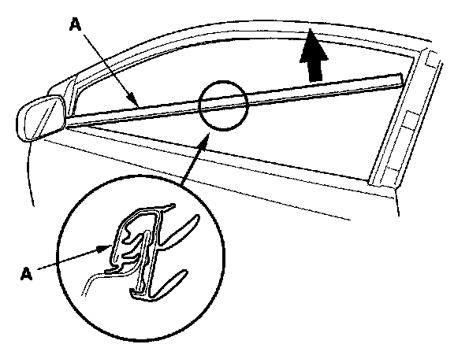
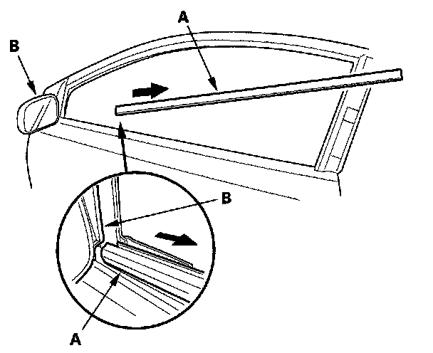

Door Glass Outer Weatherstrip Replacement
Door Glass Outer Weatherstrip Replacement2-door
NOTE:
- Put on gloves to protect your hands.
- Take care not to scratch the door.
1. Lower the glass fully.
2. Remove the door sash outer trim.

3. Starting at the rear, slowly pull up the door glass outer weatherstrip (A).

4. Release the front portion of the glass outer molding (A) from the power mirror (B).
5. Install the trim in the reverse order of removal.